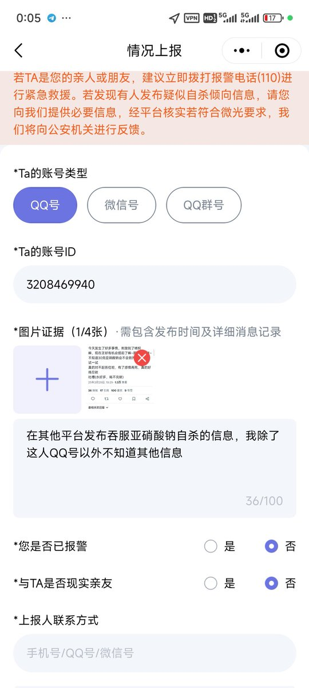
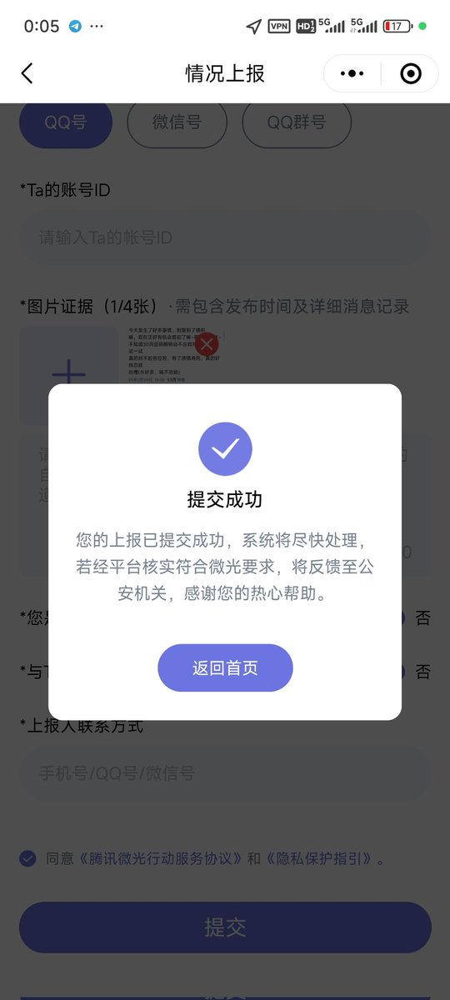
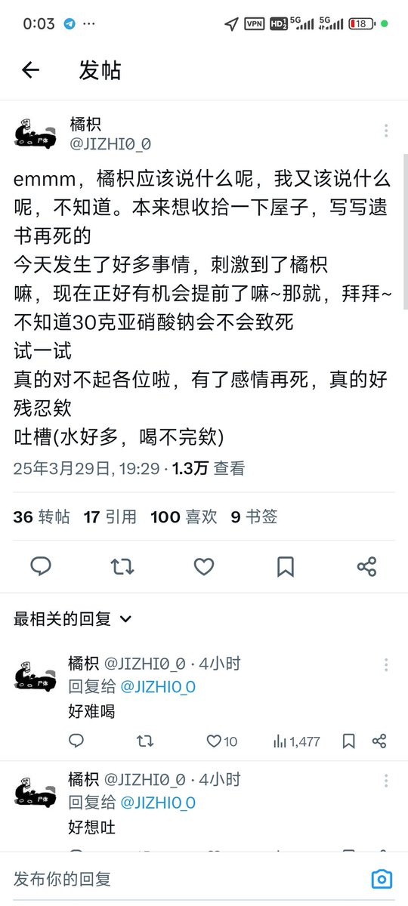

吞毒药自杀当事人的QQ3208469940，大家可以帮忙提交微信微光行动，并且如果有谁有这人的QQ信息或者有自己的开盒渠道可以自行报警，也可以直接向警察只报QQ号（警察有概率不受理）
遇到有人吞毒药自杀的情况正确反应应该是第一时间报警，而不是联系我，因为即使是联系我，我能做的也仅仅是报警而已。但是我不可能24小时都在，常常我看到消息再报警，已经耽误最佳抢救时机了。
看到有人吞毒药自杀然后向寒涟漪发送信息并不是一个好选择。发信息的时机应当是还没有实行自杀行为或者实行自杀行为被救回来的时间。
如果没有个人信息只有QQ微信账号，可通过微信微光行动提交，如果有个人信息，请直接报警。而不是“给寒涟漪发个消息”就事情结束。
并且，我现在并没有“开盒信息后报警”的能力，只能通过常见的检索社交网络和询问当事人熟人来获取个人信息。而对于吞毒药自杀这种情况，这个方法获取个人信息是完全来不及的。
微信微光行动的响应速度也非常慢，甚至有可能不响应。
如果只有一个账号而没有其他个人信息的话。求助“开盒”的黑色产业链然后自行报警，会远远比让我帮忙靠谱得多。

遇到有人吞毒药自杀的情况正确反应应该是第一时间报警，而不是联系我，因为即使是联系我，我能做的也仅仅是报警而已。但是我不可能24小时都在，常常我看到消息再报警，已经耽误最佳抢救时机了。
看到有人吞毒药自杀然后向寒涟漪发送信息并不是一个好选择。发信息的时机应当是还没有实行自杀行为或者实行自杀行为被救回来的时间。
如果没有个人信息只有QQ微信账号，可通过微信微光行动提交，如果有个人信息，请直接报警。而不是“给寒涟漪发个消息”就事情结束。
并且，我现在并没有“开盒信息后报警”的能力，只能通过常见的检索社交网络和询问当事人熟人来获取个人信息。而对于吞毒药自杀这种情况，这个方法获取个人信息是完全来不及的。
微信微光行动的响应速度也非常慢，甚至有可能不响应。
如果只有一个账号而没有其他个人信息的话。求助“开盒”的黑色产业链然后自行报警，会远远比让我帮忙靠谱得多。



遇到有人吞毒药自杀的情况正确反应应该是第一时间报警，而不是联系我，因为即使是联系我，我能做的也仅仅是报警而已。但是我不可能24小时都在，常常我看到消息再报警，已经耽误最佳抢救时机了。 https://t.co/E63tnRNMY6
遇到有人吞毒药自杀的情况正确反应应该是第一时间报警，而不是联系我，因为即使是联系我，我能做的也仅仅是报警而已。但是我不可能24小时都在，常常我看到消息再报警，已经耽误最佳抢救时机了。 https://t.co/1aSEKLZkLK
遇到有人吞毒药自杀的情况正确反应应该是第一时间报警，而不是联系我，因为即使是联系我，我能做的也仅仅是报警而已。但是我不可能24小时都在，常常我看到消息再报警，已经耽误最佳抢救时机了。 https://t.co/7O0m9QRoq9